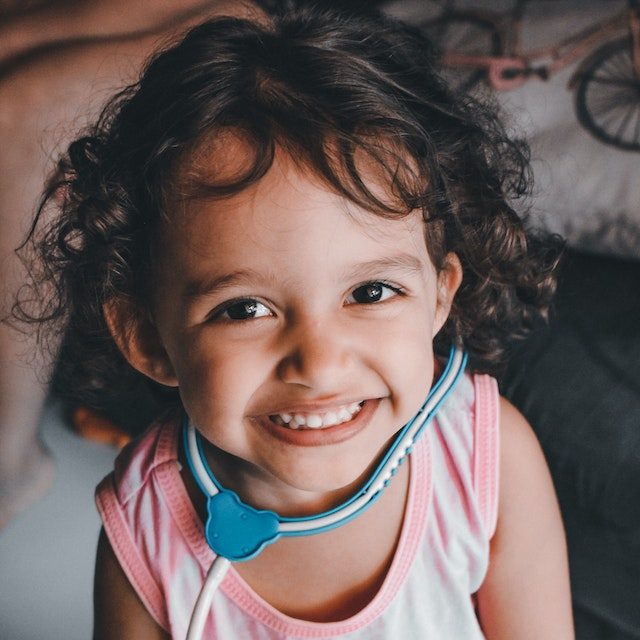

PWA con Lista
Ciudad de México

Ana
person
Benitez Delgado Juan Carlos
person
Castañeda Castillo José Manuel
person
Galicia Delgado Lesley Saray
person
Garcia Murillo Christian Brayan
person
Garcia Vega Karen
person
Islas Cabrera Erick Uriel
person
Muñoz Florez Irvin Gabriel
person
Perez Rodriguez Mextli Valeria
person
Rodriguez Esquivel Vanessa Ivonne
person
Salinas López Manuel Alejandro